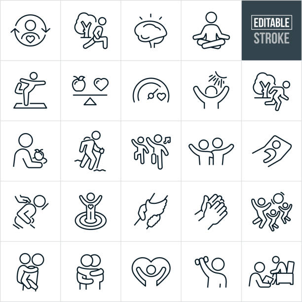
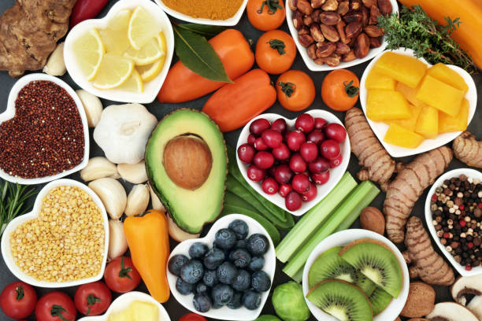

Mental Wellness Thin Line Icons

Young latin woman with arms outstretched breathing in fresh air.

Group of Latin American Workers doing stretching exercises in a business meeting at the office.
Senior friends walking in public park

Health food for fitness concept with fresh fruit,